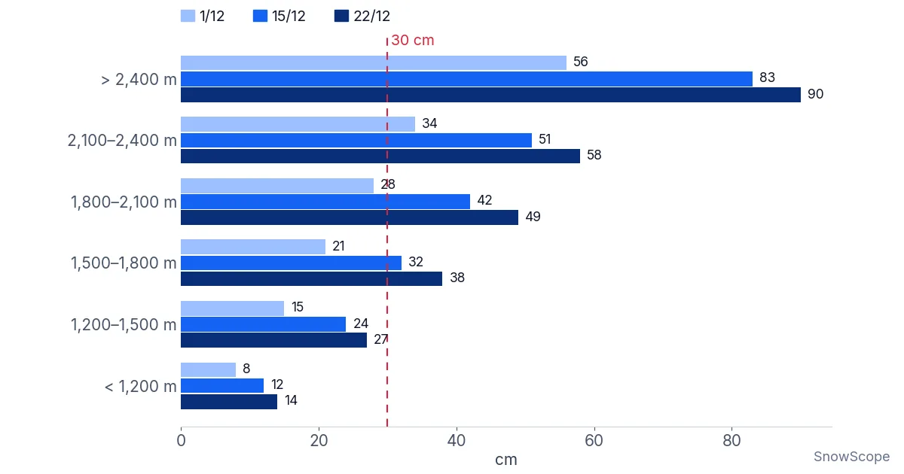

Sciare a inizio stagione sulle Alpi: quanto in alto bisogna salire a dicembre?
Sulle montagne del Marocco si impara presto una regola: se vuoi la neve, devi salire. Nell'Atlante, qualche centinaio di metri di quota può fare la differenza tra un pendio bianco e uno polveroso. A dicembre le Alpi seguono la stessa regola, solo con più neve. Abbiamo esaminato 676 comprensori sciistici alpini su 46 inverni passati per capire quanto in alto bisogna davvero stare per un viaggio prima di Natale.
Le previsioni neve in tempo reale per Stubaier Gletscher nell'app SnowScopeAltezza neve, allerte powder e mappa 3D, gratis.La scala delle quote
Abbiamo diviso le stazioni in base alla quota di metà montagna, cioè il centro del loro comprensorio, in sei gradini: sotto i 1.200 m, poi gradini di 300 m, e un ultimo gradino sopra i 2.400 m. Per ogni gradino abbiamo guardato tre date: il 1° dicembre, il 15 dicembre e il 22 dicembre. Per ogni data abbiamo preso l'altezza di neve abituale, cioè il valore centrale di 46 inverni, e poi la stazione centrale del gradino. Il grafico mostra il risultato.
Usiamo 30 cm come prova semplice. È più o meno quello che serve su pendii erbosi e lisci per sciare senza toccare il terreno. Un terreno roccioso ne richiede di più. La linea rossa tratteggiata nel grafico indica quei 30 cm.

Sotto i 1.500 m: meglio aspettare gennaio
Le stazioni con il centro sotto i 1.200 m di solito hanno solo 8 cm il 1° dicembre, 12 cm il 15 dicembre e 14 cm il 22 dicembre. Nessuna delle 92 stazioni di questo gradino arriva a 30 cm entro metà dicembre in metà degli inverni. Sono posti che a dicembre dipendono dall'innevamento artificiale e dalla fortuna.
Un gradino più in alto, tra 1.200 e 1.500 m, l'altezza abituale passa da 15 cm il 1° dicembre a 24 cm il 15 dicembre e 27 cm il 22 dicembre. In un inverno tipico solo il 20 % delle 186 stazioni di questo gradino arriva a 30 cm entro il 15 dicembre, e il 41 % entro il 22 dicembre.
KitzSki è un buon esempio. La sua metà montagna si trova a 1.378 m, e lì di solito ci sono 15 cm il 1° dicembre e 26 cm il 22 dicembre. In un inverno scarso, uno dei peggiori su dieci, il 22 dicembre ha solo 10 cm. Garmisch-Classic, a 1.387 m, è quasi identico.
Da 1.500 a 2.100 m: una buona scommessa da metà dicembre
Tra 1.500 e 1.800 m l'altezza abituale supera i 30 cm verso metà dicembre: 21 cm il 1° dicembre, 32 cm il 15 dicembre e 38 cm il 22 dicembre. In un inverno tipico il 57 % di queste stazioni arriva a 30 cm entro il 15 dicembre.
Tra 1.800 e 2.100 m il quadro cambia. L'altezza abituale è di 28 cm il 1° dicembre, 42 cm il 15 dicembre e 49 cm il 22 dicembre, e l'80 % delle stazioni di questo gradino ha 30 cm entro il 15 dicembre in metà degli inverni. St. Anton (metà montagna a 1.962 m) di solito ha 42 cm il 1° dicembre e 72 cm il 22 dicembre.
Però c'è un tranello. «In metà degli inverni» vuol dire anche che nell'altra metà la neve è più sottile. Solo l'8 % delle stazioni del gradino 1.800–2.100 m arriva a 30 cm entro il 15 dicembre in 9 inverni su 10.
Sopra i 2.100 m: dove dicembre è affidabile
Tra 2.100 e 2.400 m l'altezza abituale è di 34 cm il 1° dicembre, 51 cm il 15 dicembre e 58 cm il 22 dicembre. Il 95 % di queste stazioni ha 30 cm entro metà dicembre in metà degli inverni, e il 63 % li ha il 22 dicembre anche in 9 inverni su 10.
Sopra i 2.400 m, il gradino dei ghiacciai sciabili e delle stazioni più alte, l'altezza abituale è già di 56 cm il 1° dicembre, 83 cm il 15 dicembre e 90 cm il 22 dicembre. Entro il 22 dicembre l'88 % di queste stazioni arriva a 30 cm in 9 inverni su 10.
Lo Stubaier Gletscher (metà montagna a 2.450 m) di solito ha 63 cm il 1° dicembre e 88 cm il 15 dicembre. Val Thorens (2.474 m) ha 56 cm e 88 cm. Nel peggiore inverno su dieci, Val Thorens ha comunque 30 cm il 1° dicembre e 43 cm il 15 dicembre.
Ghiacciaio o no: cosa i numeri non mostrano
Un ghiacciaio aiuta in due modi che i nostri numeri sulla neve non colgono. Il ghiaccio sotto le piste è liscio, quindi basta uno strato sottile per sciare. E gli impianti sui ghiacciai spesso aprono già in autunno, molto prima della prima stazione di paese. I nostri numeri contano solo la neve naturale al suolo, al centro di ogni comprensorio.
L'innevamento artificiale è l'altra grande incognita. Molte stazioni più basse aprono a dicembre con neve prodotta dai cannoni su alcune piste principali. Questo può offrire una buona sciata in pista anche quando la neve naturale abituale è di 15 cm. Ma non dà neve per il fuoripista e non copre tutto il comprensorio.
Hintertux mostra che la quota non è tutto. Il suo centro si trova a 2.372 m, ma la sua altezza abituale il 1° dicembre è di 40 cm, meno dello Stubaier Gletscher a una quota simile. Valli, sole e vento cambiano la neve da un posto all'altro: per questo ogni pagina delle stazioni nell'app mostra i suoi inverni passati.
Come usare la scala quando prenoti
Per un viaggio nella prima settimana di dicembre, prenota una stazione con il centro sopra i 2.100 m, oppure un ghiacciaio. Per la settimana prima di Natale, in un inverno normale di solito bastano 1.800 m, e sopra i 2.100 m sei ben coperto anche in un inverno scarso.
Se ami una stazione più bassa, tienila per gennaio, oppure prenota all'ultimo, quando la neve vera è al suolo e si vede sulla mappa in tempo reale.
Nell'Atlante diciamo che decide la montagna, non il calendario. Sulle Alpi a dicembre è lo stesso: il calendario ti dà una data, la quota ti dà la neve.
Consigli per sciatori
- Prima di metà dicembre, prenota sopra i 2.100 m (metà montagna) o su un ghiacciaio.
- Per la settimana prima di Natale, 1.800 m sono un buon limite in un inverno normale.
- Le stazioni più basse possono andare bene con la neve artificiale, ma aspettati poche piste aperte e niente fuoripista.
- La neve di inizio stagione poggia spesso su strati deboli: controlla il bollettino valanghe ufficiale prima di sciare fuoripista.
Riferimenti e crediti
- SnowScope: Dove sciare questo inverno 2026/27 – affidabilità della neve per regione. snowscope.app/blog/en/2026/11/where-to-ski-winter-2026-27-snow-reliability-by-region.html
- Servizi europei di allerta valanghe: bollettini valanghe ufficiali. www.avalanches.org/
Su questi numeri
Numeri sulla neve: storico neve di SnowScope, 46 inverni passati (dal 1980-81 al 2025-26) alla quota centrale di 676 comprensori sciistici alpini con almeno 5 km di piste, un modello del passato corretto per la quota (neve naturale, niente innevamento artificiale, non i bollettini delle stazioni). «Abituale» = valore centrale dei 46 inverni in quella data; «9 inverni su 10» = il 10° percentile.
Cita questo articolo
Per ricerca, didattica o stampa: numeri e grafici sono liberamente riutilizzabili con licenza CC BY 4.0 citando così.
SnowScope (2026), Sciare a inizio stagione sulle Alpi: quanto in alto bisogna salire a dicembre?, https://snowscope.app/blog/it/2026/11/early-season-skiing-alps-how-high-december-snow.html, consultato il 2026-11-10
SnowScope (Atlas Labs). (2026, November 10). Sciare a inizio stagione sulle Alpi: quanto in alto bisogna salire a dicembre?. SnowScope snow reports. https://snowscope.app/blog/it/2026/11/early-season-skiing-alps-how-high-december-snow.html
BibTeX
@misc{snowscope2026earlyseasonskiingalpshow,
author = {{SnowScope (Atlas Labs)}},
title = {Sciare a inizio stagione sulle Alpi: quanto in alto bisogna salire a dicembre?},
year = {2026},
month = nov,
howpublished = {\url{https://snowscope.app/blog/it/2026/11/early-season-skiing-alps-how-high-december-snow.html}},
note = {Published 2026-11-10 14:58 UTC; accessed 2026-11-10}
}· CC BY 4.0 · Metodi, dati e strumenti →
Stubaier Gletscher: neve e temperatura per quota, quest'inverno vs lo scorso (strumenti) →
Segui Stubaier Gletscher
Gratis: un messaggio quando arriva la neve e il meteo ogni mattina.